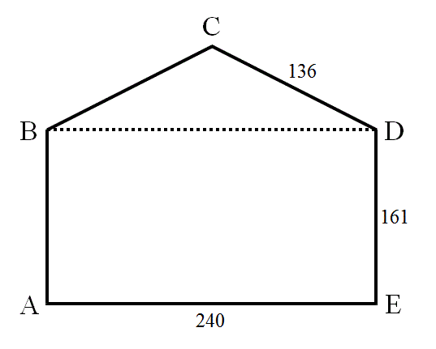

A standard envelope shape is a convex figure consisting of an isosceles triangle (the flap) placed on top of a rectangle. An example of an envelope with integral sides is shown below. Note that to form a sensible envelope, the perpendicular height of the flap ($BCD$) must be smaller than the height of the rectangle ($ABDE$).

In the envelope illustrated, not only are all the sides integral, but also all the diagonals ($AC$, $AD$, $BD$, $BE$ and $CE$) are integral too. Let us call an envelope with these properties a Heron envelope.
Let $S(p)$ be the sum of the perimeters of all the Heron envelopes with a perimeter less than or equal to $p$.
You are given that $S(10^4) = 884680$. Find $S(10^7)$.